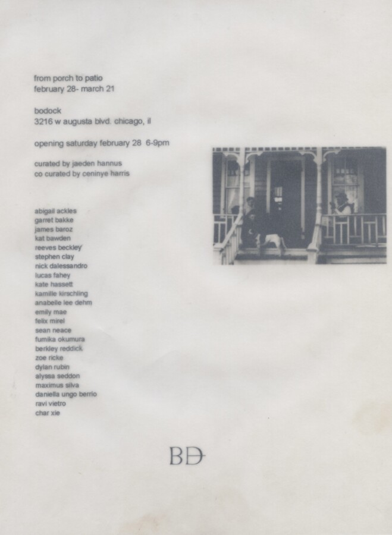

from porch to patio
In the early 20th century, the American home was built around the front porch. The porch, not fully public or private, acted as a medial space, a space to get to know your neighbor. It invited people in for conversation and prompted communal care of one another. As Richard Thomas noticed in 1975, the front porch started to move to the back of the house and became the modern patio. It is now impossible to greet your neighbors from the backyard patio.
Curated by: Jaeden Hannus
C0-Curated by: Ceninye Harris
Images by:
Abigail Ackles
Garret Bakke
James Baroz
Reeves Beckley